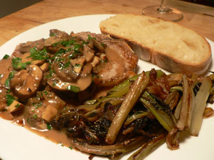

Veal chops with mushrooms
Tonight was the night that Gourmet finally impressed me, and it was the first time in my life that I prepared veal. I had veal for lunch too, which is kind of weird, but I was not to be deterred from preparing the loin chops I ordered from FreshDirect.
(Nathan was out galavanting after work and so missed the fantastic swiss chard stems that cooked slowly for over an hour in chicken broth and red wine.)
This is an exceedingly easy dish to prepare for two or four people. The preparation, which involves nothing but chopping a couple vegetables and sprinkling salt and pepper, takes longer than the cooking. Furthermore, it seems like it would be difficult to screw up these beautiful, expensive chops.
Other than the fact that I dropped the sauce-stirring spoon on my naked foot as I cooked, causing me to scream and run from the stove, this dish went off without a hitch. But would you believe that the one recipe I’ve ever really liked in Gourmet is not available at epicurious? I’ve taken it upon myself to transcribe it, and it’s worth a try by any of you (except my own mother, who doesn’t eat veal for some reason).
Sautéed veal chops with mushrooms (serves 4)
- 1 teaspoon cornstarch
- 2 teaspoons Worcestershire sauce
- 1 cup chicken broth
- 4 1/2-inch-thick veal loin chops
- 2 tablespoons olive oil
- 2 tablespoons unsalted butter
- 1 medium onion, finely chopped
- 10 ounces cremini mushrooms, thinly sliced
- 2 garlic cloves, finely chopped
- 1/4 cup heavy cream
- 1/4 cup chopped flat-leaf parsley
Preheat the oven to 200ºF. Stir together the cornstarch, Worcestershire, and chicken broth in a bowl and set aside. Season the chops with salt and pepper, and sauté them over high heat in one tablespoon of oil (you can do this in batches). Once they are well browned (don’t leave them in the pan for longer than four minutes), transfer them to a shallow baking dish and put them in the oven.
Wipe the pan clean and add the butter. Let it brown a bit, then add the onion. Cook that for a few minutes before adding the mushrooms and garlic. Turn the heat way up so that the mushrooms lose their water (this should take about 5 minutes). Give the chicken broth mixture a stir, then add it to the mushrooms. Let the sauce boil for a few minutes as you stir it, and once it’s very thick, add any accumulated juices from the roasting pan as well as the cream and parsley. Season to taste, and then pour it over the chops and serve.
Comments
You know Poppy loves veal chops and often orders them (or one) when we go out to eat, but I guess I’ve just been affected by reading one too many PETA pamphlets or something. I know that’s illogical, since I eat other varieties of meat and they are all raised fairly inhumanely, even the so-called “free-range” ones, but there’s something about the babies…
It sounds like Nathan missed a great dinner!
Oooh, that sounds absolutely wonderful. It’s been a while since I’ve had veal… perhaps when I return home from this weekend’s brief holiday, I will try my hand at something like this dish!
Also, you (and Kathryn, in fact) have mentioned Swiss chard frequently recently. To my knowledge, I’ve never purchased or cooked Swiss chard. What is it like?
I also have this issue of Gourmet and have been itching to try a few recipes. Thanks for testing the waters! also, i can practically smell how good this dish looks…
:’(
I tried to leave a comment last night to tell you I was spotlighting your blog for Blog Day (today) but my computer was not behaving. Anyway, hopefully you’ll be getting a few visitors from my blog.
The veal sounds delicious. I, like Rebecca, usually avoid veal, because it makes me feel like a bad person. But I do indulge when my conscience and wallet both allow me to do so. I’m always pleased I did.
I might try this one, as today is pay day and I’m feeling paticularly unfeeling about baby animals at the moment.
Colin: I look at this comment page and just freak out about how cool all of our gravatars look. Swiss chard is like spinach…for men. You can cook it and cook it, and in my experience it keeps getting better the longer it’s on the heat. You don’t have to worry about it, just like collards, but it’s not as intense and woody. Give it a try!
Thanks, Kalyn and Kathryn, for commenting! I don’t think we need to worry about the little babies. They should be so lucky as to grace my dinner table. I don’t usually eat veal because, in addition to being expensive, it’s not too flavorful. I have no moral hangups, though.
Leland, which do you think is more flavorful, swiss chard or kale? I definitely think either outclass collards, but can’t decide which of the two I like better, either alone or mixed with beans or pasta. I agree with you that both of them benefit from long cooking, and Laurie Colwin says so, too. Most restaurants serve them undercooked, and they’re TOUGH that way, instead of meltingly tender the way they should be.
Add a comment